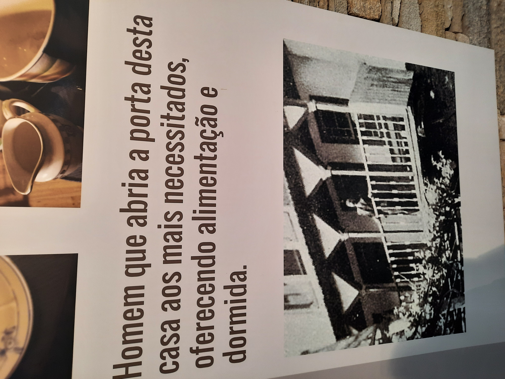
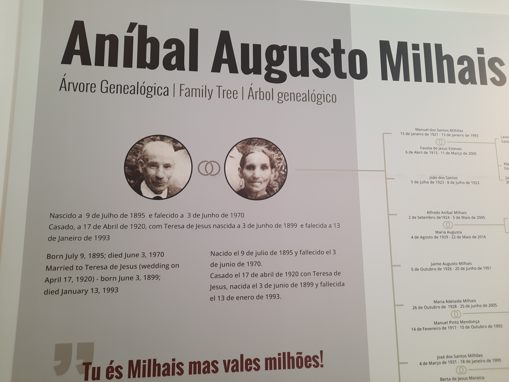
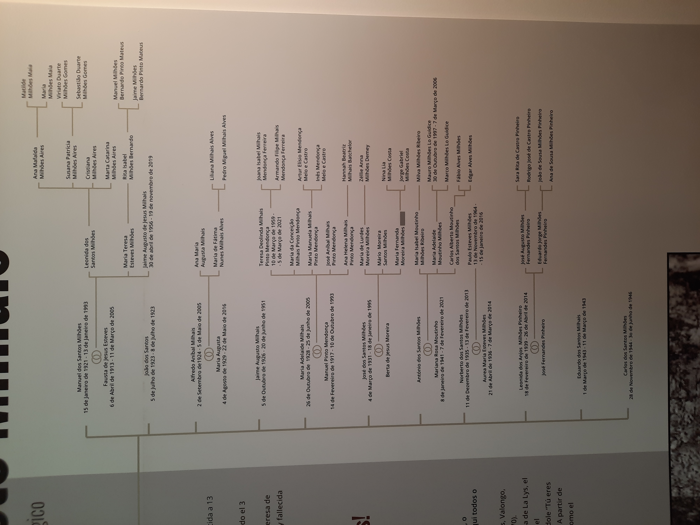
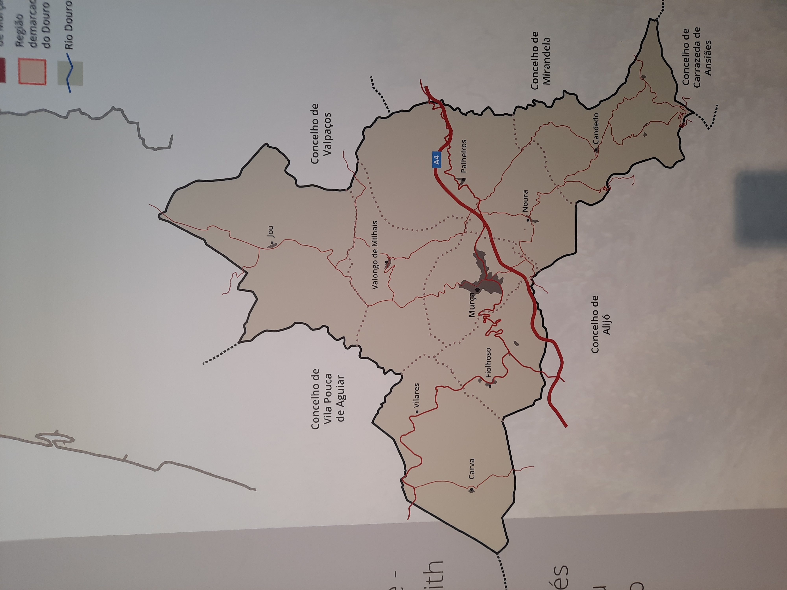
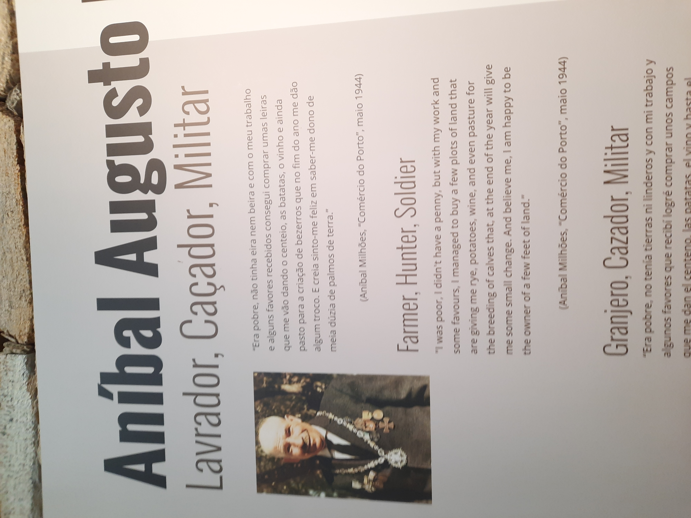
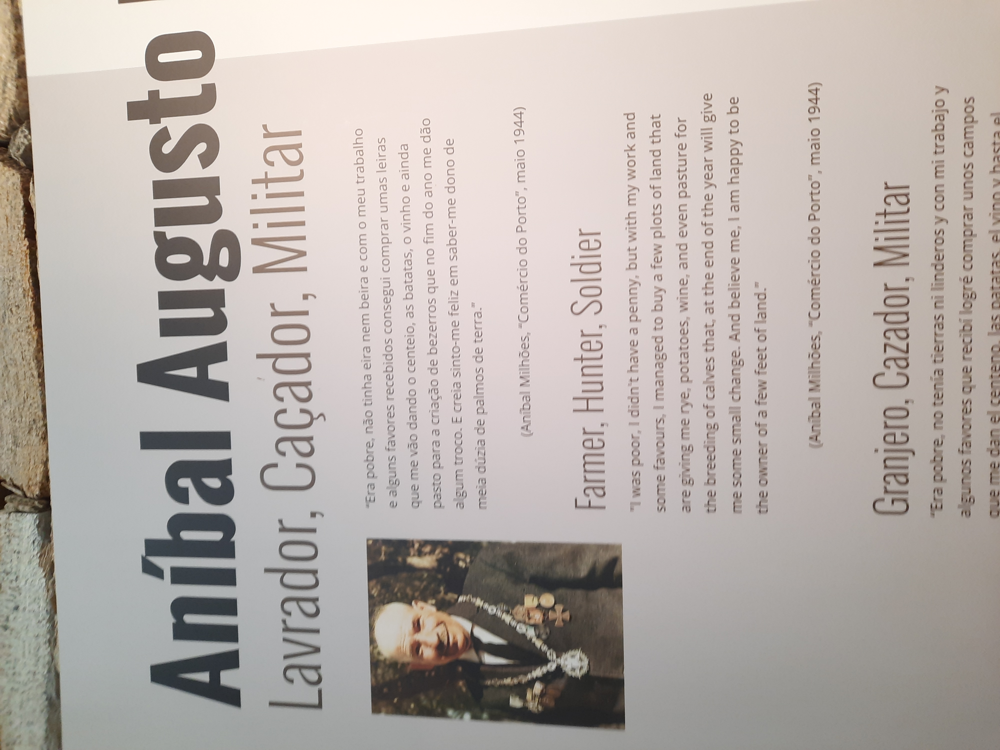

BIOGRAFIA
Aníbal Augusto Milhais nasceu no dia 9 de julho de 1895, na então denominada freguesia de Valongo, em Murça.
Desde cedo, Aníbal aprendeu os valores simples da vida, cresceu em meio à simplicidade da caça e da lavoura, encontrando alegria na sua existência modesta. Seus pais moldaram um homem que valorizava a terra e a natureza, semeando as sementes da humildade que o acompanhariam por toda a vida.
Entrou em serviço militar em 1915, onde persistiu até 1919. Mas foi apenas em 1918 durante a batalha de La Lys, em que se destacou como um herói militar. Foi aí que as palavras do comandante do Batalhão da Infantaria 15, da 2º Divisão do C.E.P proclamou o que se tornaria lenda "Tu és Milhais, mas vales milhões." Acabando mesmo por receber as mais altas honras pelo seu serviço exemplar. Recebeu ainda várias homenagens pela mesma razão.
Após o término do serviço militar em 1919, Aníbal iniciou um novo capítulo ao se casar com Teresa de Jesus, em 17 de abril de 1920. Longe dos campos de guerra, revelou-se um homem não apenas corajoso, mas também generoso. Sua casa era um refúgio para os necessitados, onde abria as portas não apenas para oferecer alimento e abrigo, mas também para compartilhar sua simpatia
Aníbal Augusto Milhais, o soldado simples que conquistou corações, teve um impacto tão profundo que seus descendentes decidiram mudar o nome familiar de "Milhais" para "Milhões", uma homenagem permanente ao legado daquele que valeu mais do que seu peso em ouro.
Aníbal Augusto Milhais teve 11 filhos, mas 3 deles faleceram muito cedo, ainda nas suas infâncias. A 3 de Junho de 1970, Aníbal faleceu deixando para trás o seu legado immortal.




 
